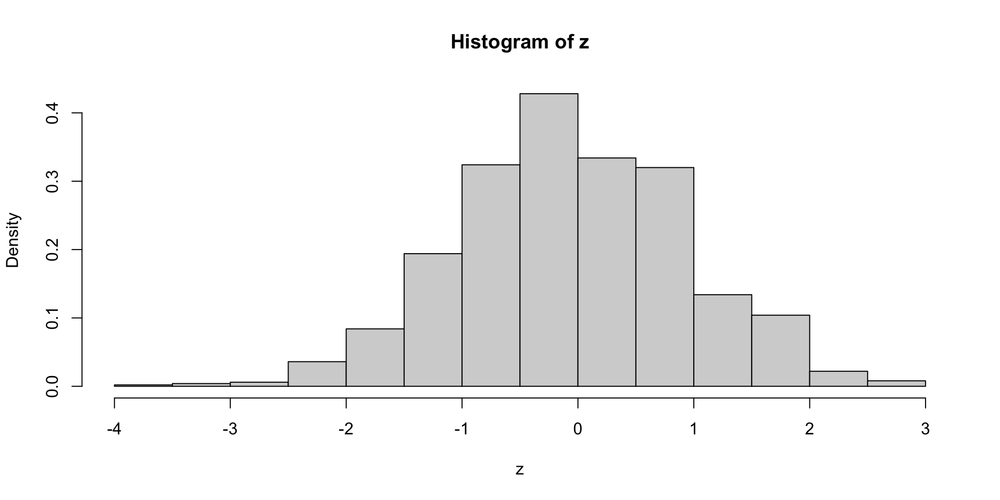

Two Sample t-test
data: mathematicians and accountants
t = 0.46359, df = 21, p-value = 0.6477
alternative hypothesis: true difference in means is not equal to 0
95 percent confidence interval:
-6.569496 10.338727
sample estimates:
mean of x mean of y
53.50000 51.61538 Statistical Models
Lecture 4
Lecture 4:
Two-sample t-test &
More on R
Outline of Lecture 4
- Two-sample hypothesis tests
- Two-sample t-test
- Two-sample t-test: Example
- The Welch t-test
- The t-test for paired samples
- More on vectors
Part 1:
Two-sample
hypothesis tests
Overview
In Lecture 3:
- We looked at data on CCI before and after the 2008 crash
- In this case data for each month is directly comparable
- Can then construct the difference between the 2007 and 2009 values
- Analysis reduces from a two-sample to a one-sample problem
Question
How do we analyze two samples that cannot be paired?
Problem statement
Goal: compare mean and variance of 2 independent normal samples
- First sample:
- X_1, \ldots, X_n from normal population N(\mu_X,\sigma_X^2)
- Second sample:
- Y_1, \ldots, Y_m from normal population N(\mu_Y,\sigma_Y^2)
- We may have n \neq m
- Samples cannot be paired due to different size!
Tests available:
- Two-sample t-test to test for difference in means
- Two-sample F-test to test for difference in variances (next week)
Why is this important?
Hypothesis testing starts to get interesting with 2 or more samples
t-test and F-test show the normal distribution family in action
This is also the maths behind regression
- Same methods apply to seemingly unrelated problems
- Regression is a big subject in statistics
Normal distribution family in action
Two-sample t-test
- Want to compare the means of two independent samples
- At the same time population variances are unknown
- Therefore both variances are estimated with sample variances
- Test statistic is t_k-distributed with k linked to the total number of observations
Normal distribution family in action
Two-sample F-test
Want to compare the variance of two independent samples
This can be done by studying the ratio of the sample variances S^2_X/S^2_Y
We have already shown that \frac{(n - 1) S^2_X}{\sigma^2_X} \sim \chi^2_{n - 1} \qquad \frac{(m - 1) S^2_Y}{\sigma^2_Y} \sim \chi^2_{m - 1}
Normal distribution family in action
Two-sample F-test
Hence we can study statistic F = \frac{S^2_X / \sigma_X^2}{S^2_Y / \sigma_Y^2}
We will see that F has F-distribution (next week)
Part 2:
Two-sample t-test
The two-sample t-test
Assumptions: Suppose given samples from 2 independent normal populations
- X_1, \ldots ,X_n iid with distribution N(\mu_X,\sigma_X^2)
- Y_1, \ldots ,Y_m iid with distribution N(\mu_Y,\sigma_Y^2)
Further assumptions:
- In general n \neq m, so that one-sample t-test cannot be applied
- The two populations have same variance \sigma^2_X = \sigma^2_Y = \sigma^2
Note: Assuming same variance is simplification. Removing it leads to Welch t-test
The two-sample t-test
Goal: Compare means \mu_X and \mu_Y
Hypothesis set: We test for a difference in means H_0 \colon \mu_X = \mu_Y \qquad H_1 \colon \mu_X \neq \mu_Y
t-statistic: The general form is T = \frac{\text{Estimate}-\text{Hypothesised value}}{\text{e.s.e.}}
The two-sample t-statistic
Define the sample means \overline{X} = \frac{1}{n} \sum_{i=1}^n X_i \qquad \qquad \overline{Y} = \frac{1}{m} \sum_{i=1}^m Y_i
Notice that {\rm I\kern-.3em E}[ \overline{X} ] = \mu_X \qquad \qquad {\rm I\kern-.3em E}[ \overline{Y} ] = \mu_Y
Therefore we can estimate \mu_X - \mu_Y with the sample means, that is, \text{Estimate} = \overline{X} - \overline{Y}
The two-sample t-statistic
Since we are testing for difference in mean, we have \text{Hypothesised value} = \mu_X - \mu_Y
The Estimated Standard Error is the standard deviation of estimator \text{e.s.e.} = \text{Standard Deviation of } \overline{X} -\overline{Y}
The two-sample t-statistic
Therefore the two-sample t-statistic is T = \frac{\overline{X} - \overline{Y} - (\mu_X - \mu_Y)}{\text{e.s.e.}}
Under the Null Hypothesis that \mu_X = \mu_Y, the t-statistic becomes T = \frac{\overline{X} - \overline{Y} }{\text{e.s.e.}}
A note on the degrees of freedom (df)
The general rule is \text{df} = \text{Sample size} - \text{No. of estimated parameters}
Sample size in two-sample t-test:
- n in the first sample
- m in the second sample
- Hence total number of observations is n + m
No. of estimated parameters is 2: Namely \mu_X and \mu_Y
Hence degree of freedoms in two-sample t-test is {\rm df} = n + m - 2 (more on this later)
The estimated standard error
Recall: We are assuming populations have same variance \sigma^2_X = \sigma^2_Y = \sigma^2
We need to compute the estimated standard error \text{e.s.e.} = \text{Standard Deviation of } \ \overline{X} -\overline{Y}
Variance of sample mean was computed in the Lemma in Slide 72 Lecture 2
Since \overline{X} \sim N(\mu_X,\sigma^2) and \overline{Y} \sim N(\mu_Y,\sigma^2), by the Lemma we get {\rm Var}[\overline{X}] = \frac{\sigma^2}{n} \,, \qquad \quad {\rm Var}[\overline{Y}] = \frac{\sigma^2}{m}
The estimated standard error
Since X_i and Y_i are independent we get {\rm Cov}(X_i,Y_j)=0
By bilinearity of covariance we infer {\rm Cov}( \overline{X} , \overline{Y} ) = \frac{1}{n \cdot m} \sum_{i=1}^n \sum_{j=1}^m {\rm Cov}(X_i,Y_j) = 0
We can then compute \begin{align*} {\rm Var}[ \overline{X} - \overline{Y} ] & = {\rm Var}[ \overline{X} ] + {\rm Var}[ \overline{Y} ] - 2 {\rm Cov}( \overline{X} , \overline{Y} ) \\ & = {\rm Var}[ \overline{X} ] + {\rm Var}[ \overline{Y} ] \\ & = \sigma^2 \left( \frac{1}{n} + \frac{1}{m} \right) \end{align*}
The estimated standard error
Taking the square root gives \text{S.D.}(\overline{X} - \overline{Y} )= \sigma \ \sqrt{\frac{1}{n}+\frac{1}{m}}
Therefore, the t-statistic is T = \frac{\overline{X} - \overline{Y} - (\mu_X - \mu_Y)}{\text{e.s.e.}} = \frac{\overline{X} - \overline{Y} - (\mu_X - \mu_Y)}{\sigma \ \sqrt{\dfrac{1}{n}+\dfrac{1}{m}}}
Estimating the variance
The t-statistic is currently T = \frac{\overline{X} - \overline{Y} - (\mu_X - \mu_Y)}{\sigma \ \sqrt{\dfrac{1}{n}+\dfrac{1}{m}}}
Variance \sigma^2 is unknown: we need to estimate it!
Define the sample variances
S_X^2 = \frac{ \sum_{i=1}^n X_i^2 - n \overline{X}^2 }{n-1} \qquad \qquad S_Y^2 = \frac{ \sum_{i=1}^m Y_i^2 - m \overline{Y}^2 }{m-1}
Estimating the variance
Recall that X_1, \ldots , X_n \sim N(\mu_X, \sigma^2) \qquad \qquad Y_1, \ldots , Y_m \sim N(\mu_Y, \sigma^2)
From Lecture 2, we know that S_X^2 and S_Y^2 are unbiased estimators of \sigma^2, i.e. {\rm I\kern-.3em E}[ S_X^2 ] = {\rm I\kern-.3em E}[ S_Y^2 ] = \sigma^2
Therefore, both S_X^2 and S_Y^2 can be used to estimate \sigma^2
Estimating the variance
We can improve the estimate of \sigma^2 by combining S_X^2 and S_Y^2
We will consider a (convex) linear combination S^2 := \lambda_X S_X^2 + \lambda_Y S_Y^2 \,, \qquad \lambda_X + \lambda_Y = 1
S^2 is still an unbiased estimator of \sigma^2, since \begin{align*} {\rm I\kern-.3em E}[S^2] & = {\rm I\kern-.3em E}[ \lambda_X S_X^2 + \lambda_Y S_Y^2 ] \\ & = \lambda_X {\rm I\kern-.3em E}[S_X^2] + \lambda_Y {\rm I\kern-.3em E}[S_Y^2] \\ & = (\lambda_X + \lambda_Y) \sigma^2 \\ & = \sigma^2 \end{align*}
Estimating the variance
We choose coefficients \lambda_X and \lambda_Y which reflect sample sizes \lambda_X := \frac{n - 1}{n + m - 2} \qquad \qquad \lambda_Y := \frac{m - 1}{n + m - 2}
Notes:
We have \lambda_X + \lambda_Y = 1
Denominators in \lambda_X and \lambda_Y are degrees of freedom {\rm df } = n + m - 2
This choice is made so that S^2 has chi-squared distribution (more on this later)
Pooled estimator of variance
Definition
The pooled estimator of \sigma^2 is defined as
S_p^2 := \lambda_X S_X^2 + \lambda_Y S_Y^2
= \frac{(n-1) S_X^2 + (m-1) S_Y^2}{n + m - 2}
Note:
- n=m implies \lambda_X = \lambda_Y
- In this case S_X^2 and S_Y^2 have same weight in S_p^2
The two-sample t-statistic
The t-statistic has currently the form T = \frac{\overline{X} - \overline{Y} - (\mu_X - \mu_Y)}{\sigma \ \sqrt{\dfrac{1}{n}+\dfrac{1}{m}}}
We replace \sigma with the pooled estimator S_p
The two-sample t-statistic
Definition
The two sample t-statistic is defined as
T := \frac{\overline{X} - \overline{Y} - (\mu_X - \mu_Y)}{ S_p \ \sqrt{\dfrac{1}{n}+\dfrac{1}{m}}}
Note: Under the Null Hypothesis that \mu_X = \mu_Y this becomes T = \frac{\overline{X} - \overline{Y}}{ S_p \ \sqrt{\dfrac{1}{n}+\dfrac{1}{m}}} = \frac{\overline{X} - \overline{Y}}{ \sqrt{ \dfrac{ (n-1) S_X^2 + (m-1) S_Y^2 }{n + m - 2} } \ \sqrt{\dfrac{1}{n}+\dfrac{1}{m}}}
Distribution of two-sample t-statistic
Theorem
The two sample t-statistic has t_{n+m-2} distribution
T := \frac{\overline{X} - \overline{Y} - (\mu_X - \mu_Y)}{ S_p \ \sqrt{\dfrac{1}{n}+\dfrac{1}{m}}} \sim t_{n + m - 2}
Distribution of two-sample t-statistic
Proof
We have already seen that \overline{X} - \overline{Y} is normal with {\rm I\kern-.3em E}[\overline{X} - \overline{Y}] = \mu_X - \mu_Y \qquad \qquad {\rm Var}[\overline{X} - \overline{Y}] = \sigma^2 \left( \frac{1}{n} + \frac{1}{m} \right)
Therefore we can rescale \overline{X} - \overline{Y} to get U := \frac{\overline{X} - \overline{Y} - (\mu_X - \mu_Y)}{ \sigma \sqrt{ \dfrac{1}{n} + \dfrac{1}{m}}} \sim N(0,1)
Distribution of two-sample t-statistic
Proof
We are assuming X_1, \ldots, X_n iid N(\mu_X,\sigma^2)
Therefore, as already shown, we have \frac{ (n-1) S_X^2 }{ \sigma^2 } \sim \chi_{n-1}^2
Similarly, since Y_1, \ldots, Y_m iid N(\mu_Y,\sigma^2), we get \frac{ (m-1) S_Y^2 }{ \sigma^2 } \sim \chi_{m-1}^2
Distribution of two-sample t-statistic
Proof
Since X_i and Y_j are independent, we also have that \frac{ (n-1) S_X^2 }{ \sigma^2 } \quad \text{ and } \quad \frac{ (m-1) S_Y^2 }{ \sigma^2 } \quad \text{ are independent}
In particular we obtain \frac{ (n-1) S_X^2 }{ \sigma^2 } + \frac{ (m-1) S_Y^2 }{ \sigma^2 } \sim \chi_{n-1}^2 + \chi_{m-1}^2 \sim \chi_{m + n- 2}^2
Distribution of two-sample t-statistic
Proof
Recall the definition of S_p^2 S_p^2 = \frac{(n-1) S_X^2 + (m-1) S_Y^2}{ n + m - 2 }
Therefore V := \frac{ (n+m-2) S_p^2 }{ \sigma^2 } = \frac{ (n - 1) S_X^2}{ \sigma^2} + \frac{ (m-1) S_Y^2 }{ \sigma^2 } \sim \chi_{n + m - 2}^2
Distribution of two-sample t-statistic
Proof
- Rewrite T as \begin{align*} T & = \frac{\overline{X} - \overline{Y} - (\mu_X - \mu_Y)}{ S_p \ \sqrt{\dfrac{1}{n}+\dfrac{1}{m}}} \\ & = \frac{\overline{X} - \overline{Y} - (\mu_X - \mu_Y)}{ \sigma \sqrt{ \dfrac{1}{n} + \dfrac{1}{m} } } \Bigg/ \sqrt{ \frac{ (n + m - 2) S_p^2 \big/ \sigma^2}{ (n+ m - 2) } } \\ & = \frac{U}{\sqrt{V/(n+m-2)}} \end{align*}
Distribution of two-sample t-statistic
Proof
By construction \overline{X}- \overline{Y} is independent of S_X^2 and S_Y^2
Therefore \overline{X}- \overline{Y} is independent of S_p^2
We conclude that U and V are independent
In conclusion, we have shown that T = \frac{U}{\sqrt{V/(n+m-2)}} \,, \qquad U \sim N(0,1) \,, \qquad V \sim \chi_{n + m - 2}^2
By the Theorem in Slide 118 of Lecture 2, we conclude that T \sim t_{n+m-2}
The two-sample t-test
Suppose given two independent samples
- Sample x_1, \ldots, x_n from N(\mu_X,\sigma^2) of size n
- Sample y_1, \ldots, y_m from N(\mu_Y,\sigma^2) of size m
The two-sided hypothesis for difference in means is H_0 \colon \mu_X = \mu_Y \,, \quad \qquad H_1 \colon \mu_X \neq \mu_Y
The one-sided alternative hypotheses are H_1 \colon \mu_X < \mu_Y \quad \text{ or } \quad H_1 \colon \mu_X > \mu_Y
Procedure: 3 Steps
- Calculation: Compute the two-sample t-statistic t = \frac{ \overline{x} - \overline{y}}{ s_p \ \sqrt{ \dfrac{1}{n} + \dfrac{1}{m} }} where sample means and pooled variance estimator are \overline{x} = \frac{1}{n} \sum_{i=1}^n x_i \qquad \overline{y} = \frac{1}{m} \sum_{i=1}^m y_i \qquad s_p^2 = \frac{ (n-1) s_X^2 + (m - 1) s_Y^2 }{ m + n - 2} s_X^2 = \frac{\sum_{i=1}^n x_i^2 - n \overline{x}^2}{n-1} \qquad s_Y^2 = \frac{\sum_{i=1}^m y_i^2 - m \overline{y}^2}{m-1}
- Statistical Tables or R: Find either
- Critical value t^* in Table 1
- p-value in R
- Interpretation: Reject H_0 when either p < 0.05 \qquad \text{ or } \qquad t \in \,\,\text{Rejection Region} \qquad \qquad \qquad \qquad (T \, \sim \, t_{n+m-1})
| Alternative | Rejection Region | t^* | p-value |
|---|---|---|---|
| \mu_X \neq \mu_Y | |t| > t^* | t_{n+m-1}(0.025) | 2P(T > |t|) |
| \mu_X < \mu_Y | t < - t^* | t_{n+m-1}(0.05) | P(T < t) |
| \mu_X > \mu_Y | t > t^* | t_{n+m-1}(0.05) | P(T > t) |

Reject H_0 if t-statistic t falls in the Rejection Region (in gray). Here t \sim t_{n+m-1}
The two-sample t-test in R
General commands
- Store the samples x_1,\ldots,x_n and y_1,\ldots,y_m in two R vectors
x <- c(x1, ..., xn)\qquady <- c(y1, ..., ym)
- Perform a two-sample t-test on
xandy
| Alternative | R command |
|---|---|
| \mu_X \neq \mu_Y | t.test(x, y, var.equal = T) |
| \mu_X < \mu_Y | t.test(x, y, var.equal = T, alt = "less") |
| \mu_X > \mu_Y | t.test(x, y, var.equal = T, alt = "greater") |
- Read output: similar to one-sample t-test
- The main quantity of interest is p-value
Comments on command t.test(x, y)
Warning: If var.equal = T is not specified then
R assumes that populations have different variance \sigma_X^2 \neq \sigma^2_Y
In this case the t-statistic t = \frac{ \overline{x} - \overline{y} }{s_p \sqrt{ \dfrac{1}{n} + \dfrac{1}{m} }} is NOT t-distributed
R performs the Welch t-test instead of the classic t-test
(more on this later)
Part 3:
Two-sample t-test
Example
| Mathematicians | x_1 | x_2 | x_3 | x_4 | x_5 | x_6 | x_7 | x_8 | x_9 | x_{10} |
|---|---|---|---|---|---|---|---|---|---|---|
| Wages | 36 | 40 | 46 | 54 | 57 | 58 | 59 | 60 | 62 | 63 |
| Accountants | y_1 | y_2 | y_3 | y_4 | y_5 | y_6 | y_7 | y_8 | y_9 | y_{10} | y_{11} | y_{12} | y_{13} |
|---|---|---|---|---|---|---|---|---|---|---|---|---|---|
| Wages | 37 | 37 | 42 | 44 | 46 | 48 | 54 | 56 | 59 | 60 | 60 | 64 | 64 |
Samples: Wage data on 10 Mathematicians and 13 Accountants
- Wages are independent and normally distributed
- Populations have equal variance
Quesion: Is there evidence of differences in average pay?
Answer: Two-sample two-sided t-test for the hypothesis H_0 \colon \mu_X = \mu_Y \,,\qquad H_1 \colon \mu_X \neq \mu_Y
Calculations: First sample
Sample size: \ n = No. of Mathematicians = 10
Mean: \bar{x} = \frac{\sum_{i=1}^n x_i}{n} = \frac{36+40+46+ \ldots +62+63}{10}=\frac{535}{10}=53.5
Variance: \begin{align*} s^2_X & = \frac{\sum_{i=1}^n x_i^2 - n \bar{x}^2}{n -1 } \\ \sum_{i=1}^n x_i^2 & = 36^2+40^2+46^2+ \ldots +62^2+63^2 = 29435 \\ s^2_X & = \frac{29435-10(53.5)^2}{9} = 90.2778 \end{align*}
Calculations: Second sample
Sample size: \ m = No. of Accountants = 13
Mean: \bar{y} = \frac{37+37+42+ \dots +64+64}{13} = \frac{671}{13} = 51.6154
Variance: \begin{align*} s^2_Y & = \frac{\sum_{i=1}^m y_i^2 - m \bar{y}^2}{m - 1} \\ \sum_{i=1}^m y_i^2 & = 37^2+37^2+42^2+ \ldots +64^2+64^2 = 35783 \\ s^2_Y & = \frac{35783-13(51.6154)^2}{12} = 95.7564 \end{align*}
Calculations: Pooled Variance
Pooled variance: \begin{align*} s_p^2 & = \frac{(n-1) s_X^2 + (m-1) s_Y^2}{ n + m - 2} \\ & = \frac{(9) 90.2778 + (12) 95.7564 }{ 10 + 13 - 2} \\ & = 93.40843 \end{align*}
Pooled standard deviation: s_p = \sqrt{93.40843} = 9.6648
Calculations: t-statistic
- Calculation: Compute the two-sample t-statistic
\begin{align*} t & = \frac{\bar{x} - \bar{y} }{s_p \ \sqrt{\dfrac{1}{n}+\dfrac{1}{m}}} \\ & = \frac{53.5 - 51.6154}{9.6648 \times \sqrt{\dfrac{1}{10}+\dfrac{1}{13}}} \\ & = \frac{1.8846}{9.6648{\times}0.4206} \\ & = 0.464 \,\, (3\ \text{d.p.}) \end{align*}
Completing the t-test
- Referencing Tables:
- Degrees of freedom are {\rm df} = n + m - 2 = 10 + 13 - 2 = 21
- Find corresponding critical value in Table 1 t_{21}(0.025) = 2.08 (Note the value 0.025, since this is two-sided test)
Completing the t-test
- Interpretation:
- We have that | t | = 0.464 < 2.08 = t_{21}(0.025)
- t falls in the acceptance region
- Therefore the p-value satisfies p>0.05
- There is no evidence (p>0.05) in favor of H_1
- Hence we accept that \mu_X = \mu_Y
- Conclusion: Average pay levels seem to be the same for both professions
The two-sample t-test in R
This is a two-sided t-test with assumption of equal variance. The p-value is
p = 2 P(t_{n-1} > |t|) \,, \qquad t = \frac{\bar{x} - \bar{y} }{s_p \ \sqrt{1/n + 1/m}}
# Enter Wages data in 2 vectors using function c()
mathematicians <- c(36, 40, 46, 54, 57, 58, 59, 60, 62, 63)
accountants <- c(37, 37, 42, 44, 46, 48, 54, 56, 59, 60, 60, 64, 64)
# Two-sample t-test with null hypothesis mu_X = mu_Y
# and equal variance assumption. Store result in answer and print.
answer <- t.test(mathematicians, accountants, var.equal = TRUE)
print(answer)- Code can be downloaded here two_sample_t_test.R
Comments on output:
- First line: R tells us that a Two-Sample t-test is performed
- Second line: Data for t-test is
mathematiciansandaccountants
Two Sample t-test
data: mathematicians and accountants
t = 0.46359, df = 21, p-value = 0.6477
alternative hypothesis: true difference in means is not equal to 0
95 percent confidence interval:
-6.569496 10.338727
sample estimates:
mean of x mean of y
53.50000 51.61538 Comments on output:
- Third line:
- The t-statistic computed is t = 0.46359
- Note: This coincides with the one computed by hand!
- There are 21 degrees of freedom
- The p-values is p = 0.6477
Two Sample t-test
data: mathematicians and accountants
t = 0.46359, df = 21, p-value = 0.6477
alternative hypothesis: true difference in means is not equal to 0
95 percent confidence interval:
-6.569496 10.338727
sample estimates:
mean of x mean of y
53.50000 51.61538 Comments on output:
- Fourth line: The alternative hypothesis is that the difference in means is not zero
- This translates to H_1 \colon \mu_X \neq \mu_Y
- Warning: This is not saying to reject H_0 – R is just stating H_1
Two Sample t-test
data: mathematicians and accountants
t = 0.46359, df = 21, p-value = 0.6477
alternative hypothesis: true difference in means is not equal to 0
95 percent confidence interval:
-6.569496 10.338727
sample estimates:
mean of x mean of y
53.50000 51.61538 Comments on output:
- Fifth line: R computes a 95 \% confidence interval for \mu_X - \mu_Y
(\mu_X - \mu_Y) \in [-6.569496, 10.338727]
- Interpretation: If you repeat the experiment (on new data) over and over, the interval [a,b] will contain \mu_X - \mu_Y about 95\% of the times
Two Sample t-test
data: mathematicians and accountants
t = 0.46359, df = 21, p-value = 0.6477
alternative hypothesis: true difference in means is not equal to 0
95 percent confidence interval:
-6.569496 10.338727
sample estimates:
mean of x mean of y
53.50000 51.61538 Comments on output:
- Seventh line: R computes sample mean for the two populations
- Sample mean for
mathematiciansis 53.5 - Sample mean for
accountantsis 51.61538
- Sample mean for
Two Sample t-test
data: mathematicians and accountants
t = 0.46359, df = 21, p-value = 0.6477
alternative hypothesis: true difference in means is not equal to 0
95 percent confidence interval:
-6.569496 10.338727
sample estimates:
mean of x mean of y
53.50000 51.61538 Conclusion: The p-value is p = 0.6477
- Since p > 0.05 we do not reject H_0
- Hence \mu_X and \mu_Y appear to be similar
- Average pay levels seem to be the same for both professions
Comment on Assumptions
The previous two-sample t-test was conducted under the following assumptions:
- Wages data is normally distributed
- The two populations have equal variance
Using R, we can plot the data to see if these are reasonable (graphical exploration)
Warnings: Even if the assumptions hold
- we cannot expect the samples to be exactly normal (bell-shaped)
- rather, look for approximate normality
- we cannot expect the sample variances to match
- rather, look for a similar spread in the data
Estimating the sample distribution in R
Suppose given a data sample stored in a vector z
If the sample is large, we can check normality by plotting the histogram of
zExample:
zsample of size 1000 form N(0,1) – Its histogram resembles N(0,1)
Drawback: Small samples \implies hard to check normality from histogram
- This is true even if the data is normal
- Example:
zbelow is sample of size 9 from N(0,1) – But histogram not normal
Solution: Suppose given iid sample z from a distribution f
The command
density(z)estimates the population distribution f
(Estimate based on the sampling distribution ofzand smoothing - Not easy task)Example:
zas in previous slide. The plot ofdensity(z)shows normal behavior

The R object density(z) models a 1D function (the estimated distribution of z)
- As such, it contains a grid of x values, with associated y values
- x values are stored in vector
density(z)$x - y values are stored in vector
density(z)$y
- x values are stored in vector
- These values are useful to set the axis range in a plot
dz <- density(z)
plot(dz, # Plot dz
xlim = range(dz$x), # Set x-axis range
ylim = range(dz$y)) # Set y-axis rangeAxes range set as the min and max values of components of dz
Checking the Assumptions on our Example
# Compute the estimated distributions
d.math <- density(mathematicians)
d.acc <- density(accountants)
# Plot the estimated distributions
plot(d.math, # Plot d.math
xlim = range(c(d.math$x, d.acc$x)), # Set x-axis range
ylim = range(c(d.math$y, d.acc$y)), # Set y-axis range
main = "Estimated Distributions of Wages") # Add title to plot
lines(d.acc, # Layer plot of d.acc
lty = 2) # Use different line style
legend("topleft", # Add legend at top-left
legend = c("Mathematicians", # Labels for legend
"Accountants"),
lty = c(1, 2)) # Assign curves to legendAxes range set as the min and max values of components of d.math and d.acc

Wages data looks approximately normally distributed (roughly bell-shaped)
The two populations have similar variance (spreads look similar)
Conclusion: Two-sample t-test with equal variance is appropriate \implies accept H_0
Part 4:
The Welch t-test
Samples with different variance
We just examined the two-sample t-tests
This assumes independent normal populations with equal variance
\sigma_X^2 = \sigma_Y^2
Question: What happens if variances are different?
Answer: Use the Welch Two-sample t-test
- This is a generalization of the two-sample t-test to the case \sigma_X^2 \neq \sigma_Y^2
- In R it is performed with
t.test(x, y) - Note that we are just omitting the option
var.equal = TRUE - Equivalently, you may specify
var.equal = FALSE
The Welch two-sample t-test
Welch t-test consists in computing the Welch statistic w = \frac{\overline{x} - \overline{y}}{ \sqrt{ \dfrac{s_X^2}{n} + \dfrac{s_Y^2}{m} } }
If sample sizes m,n > 5, then w is approximately t-distributed
- Degrees of freedom are not integer, and depend on S_X, S_Y, n, m
If variances are similar, the welch statistic is comparable to the t-statistic
w \approx t : = \frac{ \overline{x} - \overline{y} }{s_p \sqrt{ \dfrac{1}{n} + \dfrac{1}{m} }}
Welch t-test Vs two-sample t-test
If variances are similar:
- Welch statistic and t-statistic are similar
- p-value from Welch t-test is similar to p-value from two-sample t-test
- Since p-values are similar, most times the 2 tests yield same decision
- The tests can be used interchangeably
If variances are very different:
- Welch statistic and t-statistic are different
- p-values from the two tests can differ a lot
- The two tests might give different decision
- Wrong to apply two-sample t-test, as variances are different
The Welch two-sample t-test in R
# Enter Wages data
mathematicians <- c(36, 40, 46, 54, 57, 58, 59, 60, 62, 63)
accountants <- c(37, 37, 42, 44, 46, 48, 54, 56, 59, 60, 60, 64, 64)
# Perform Welch two-sample t-test with null hypothesis mu_X = mu_Y
# Store result of t.test in answer
answer <- t.test(mathematicians, accountants)
# Print answer
print(answer)- Note:
- This is almost the same code as in Slide 86
- Only difference: we are omitting the option
var.equal = TRUEint.test
Welch Two Sample t-test
data: mathematicians and accountants
t = 0.46546, df = 19.795, p-value = 0.6467
alternative hypothesis: true difference in means is not equal to 0
95 percent confidence interval:
-6.566879 10.336109
sample estimates:
mean of x mean of y
53.50000 51.61538 Comments on output:
- First line: R tells us that a Welch Two-Sample t-test is performed
- The rest of the output is similar to classic t-test
- Main difference is that p-value and t-statistic differ from classic t-test
Welch Two Sample t-test
data: mathematicians and accountants
t = 0.46546, df = 19.795, p-value = 0.6467
alternative hypothesis: true difference in means is not equal to 0
95 percent confidence interval:
-6.566879 10.336109
sample estimates:
mean of x mean of y
53.50000 51.61538 Comments on output:
- Third line:
- The Welch t-statistic is w = 0.46546 (standard t-test gave t = 0.46359)
- Degrees of freedom are fractionary \rm{df} = 19.795 (standard t-test \rm{df} = 21)
- The Welch t-statistic is approximately t-distributed with W \approx t_{19.795}
- Fifth line: The confidence interval for \mu_X - \mu_Y is also different
Welch Two Sample t-test
data: mathematicians and accountants
t = 0.46546, df = 19.795, p-value = 0.6467
alternative hypothesis: true difference in means is not equal to 0
95 percent confidence interval:
-6.566879 10.336109
sample estimates:
mean of x mean of y
53.50000 51.61538 Conclusion: The p-values obtained with the 2 tests are almost the same
Welch t-test: p-value = 0.6467 \qquad Classic t-test: p-value = 0.6477
Both test: p > 0.05, and therefore do not reject H_0
Note: This was expected
- The spread of the two populations is similar \implies \, \sigma_X^2 \approx \sigma_Y^2
- Hence, Welch t-statistic approximates t-statistic \implies p-values are similar
Exercise
We compare the Effect of Two Treatments on Blood Pressure Change
Both treatments are given to a group of patients
Measurements of changes in blood pressure are taken after 4 weeks of treatment
Note that changes represent both positive and negative shifts in blood pressure
| Treat. A | -1.9 | -2.5 | -2.1 | -2.4 | -2.6 | -1.9 | ||||||
| Treat. B | -1.1 | -0.9 | -1.4 | 0.2 | 0.3 | 0.6 | -5 | -2.4 | -1.5 | 2.3 | -2.8 | 2.1 |
# Enter changes in Blood pressure data
trA <- c(-1.9, -2.5, -2.1, -2.4, -2.6, -1.9)
trB <- c(-1.1, -0.9, -1.4, 0.2, 0.3, 0.6, -5,
-2.4, -1.5, 2.3, -2.8, 2.1)
cat("Mean of Treatment A:", mean(trA), "Mean of Treatment B:", mean(trB))Mean of Treatment A: -2.233333 Mean of Treatment B: -0.8Sample means show both Treatments are effective in decreasing blood pressure
However Treatment A seems slightly better
Question: Perform a t-test to see if Treatment A is better H_0 \colon \mu_A = \mu_B \, , \qquad H_1 \colon \mu_A < \mu_B
Solution: Estimated density of Treatment A
- Estimated density looks bell-shaped \implies First population is normal
- Sample seems concentrated between -3 and -1.5
Estimated density of Treatment B

- Estimated density looks bell-shaped \implies Second population is normal
- Sample seems concentrated between -7 and 4
Findings
- Both populations are normal \implies t-test is appropriate
- First sample seems concentrated between -3 and -1.5
- Second sample seems concentrated between -7 and 4
- Treatment B has larger spread
- Therefore we suspect that populations have different variance
\sigma_A^2 \neq \sigma_B^2
Conclusion:
- The Welch t-test is appropriate
- Two sample t-test would not be appropriate (as it assumes equal variance)
Apply the Welch t-test
We are testing the one-sided hypothesis
H_0 \colon \mu_A = \mu_B \, , \qquad H_1 \colon \mu_A < \mu_B
# Perform Welch t-test and retrieve p-value
ans <- t.test(trA, trB, alt = "less", var.equal = F)
ans$p.value[1] 0.01866013The p-value is p < 0.05
We reject H_0 \implies Treatment A is more effective
Two-sample t-test gives different decision
We are testing the one-sided hypothesis
H_0 \colon \mu_A = \mu_B \, , \qquad H_1 \colon \mu_A < \mu_B
# Perform two-sample t-test and retrieve p-value
ans <- t.test(trA, trB, alt = "less", var.equal = T)
ans$p.value[1] 0.05836482The p-value is p > 0.05
H_0 cannot be rejected \implies There is no evidence that Treatment A is better
Wrong conclusion, because two-sample t-test does not apply
Disclaimer
The previous data was synthetic, and the background story was made up!
Nonetheless, the example is still valid
To construct the data, I sampled as follows
- Treatment A: Sample of size 6 from N(-2,1)
- Treatment B: Sample of size 12 from N(-1.5,9)
We see that \mu_A < \mu_B \,, \qquad \sigma_A^2 \neq \sigma_B^2
This tells us that:
- We can expect that some samples will support that \mu_A < \mu_B
- Two-sample t-test is inappropriate because \sigma_A^2 \neq \sigma_B^2
Generating the Data
Click here to see the code I used
# Set seed for random generation
# This way you always get the same random numbers when
# you run this code
set.seed(21)
repeat {
# Generate random samples
x <- rnorm(6, mean = -2, sd = 1)
y <- rnorm(12, mean = -1.5, sd = 3)
# Round x and y to 1 decimal point
x <- round(x, 1)
y <- round(y, 1)
# Perform one-sided t-tests for alternative hypothesis mu_x < mu_y
ans_welch <- t.test(x, y, alt = "less", var.equal = F)
ans_t_test <- t.test(x, y, alt = "less", var.equal = T)
# Check that Welch test succeeds and two-sample test fails
if (ans_welch$p.value < 0.05 && ans_t_test$p.value > 0.05) {
cat("Data successfully generated!!!\n\n")
cat("Synthetic Data TrA:", x, "\n")
cat("Synthetic Data TrB:", y, "\n\n")
cat("Welch t-test p-value:", ans_welch$p.value, "\n")
cat("Two-sample t-test p-value:", ans_t_test$p.value)
break
}
}Data successfully generated!!!
Synthetic Data TrA: -1.9 -2.5 -2.1 -2.4 -2.6 -1.9
Synthetic Data TrB: -1.1 -0.9 -1.4 0.2 0.3 0.6 -5 -2.4 -1.5 2.3 -2.8 2.1
Welch t-test p-value: 0.01866013
Two-sample t-test p-value: 0.05836482Method:
Sample the data as in previous slide (round to 1 d.p. for cleaner looking data)
Repeat until Welch test succeeds, and two-sample t-test fails \text{p-value of Welch test } \, < 0.05 < \, \text{p-value of Two-sample t-test}
Part 5:
The t-test for
paired samples
Paired samples
Assume to have two sample with same size
Sometimes the two samples depend on each other in some way
- Twin studies:
- Twins are used as pairs (to control genetic or environmental factors)
- Example: test effectiveness of a medical treatment against placebo
- The two samples are clearly dependent
(think of twins as the same person)
- As such, the usual two-sample t-test is not applicable
(because it assumes independence)
Paired samples
Assume to have two sample with same size
Sometimes the two samples depend on each other in some way
- Pre-test and Post-test
- Measure the outcome of a certain action
- Example: does this module work for teaching R?
- We can assess the effectiveness of something with a pre-test and a post-test
- The two samples are clearly dependent
(each individual takes a test twice) - As such, the usual two-sample t-test is not applicable
(because it assumes independence)
The paired t-test
Suppose given two samples
Sample x_1, \ldots, x_n from N(\mu_X,\sigma^2_X)
Sample y_1, \ldots, y_n from N(\mu_Y,\sigma^2_Y)
The hypotheses for difference in means are H_0 \colon \mu_X = \mu_Y \,, \quad \qquad H_1 \colon \mu_X \neq \mu_Y \,, \quad \mu_X < \mu_Y \,, \quad \text{ or } \quad \mu_X > \mu_Y
The paired t-test
Assumption: The data is paired, meaning that the differences
d_i = x_i - y_i \,\, \text{ are iid} \,\, N(\mu,\sigma^2) \quad \text{where} \quad \mu := \mu_X - \mu_Y
The hypotheses for the difference in means are equivalent to
H_0 \colon \mu = 0 \,, \quad \qquad H_1 \colon \mu \neq 0 \,, \quad \mu < 0 \,, \quad \text{ or } \quad \mu > 0
These can be tested with a one-sample t-test
R commands: The paired t-test can be called with the equivalent commands
t.test(x, y, paired = TRUE)\qquad \quad H_0 \colon \mu_X = \mu_Yt.test(x - y)\qquad \qquad \qquad \qquad\qquad H_0 \colon \mu = 0
Example 1: The 2008 crisis (again!)
| Month | J | F | M | A | M | J | J | A | S | O | N | D |
|---|---|---|---|---|---|---|---|---|---|---|---|---|
| CCI 2007 | 86 | 86 | 88 | 90 | 99 | 97 | 97 | 96 | 99 | 97 | 90 | 90 |
| CCI 2009 | 24 | 22 | 21 | 21 | 19 | 18 | 17 | 18 | 21 | 23 | 22 | 21 |
Data: Monthly Consumer Confidence Index (CCI) in 2007 and 2009
Question: Did the crash of 2008 have lasting impact upon CCI?
Observations:
- Data shows a massive drop in CCI between 2007 and 2009
- Data is clearly paired (Pre-test and Post-test situation)
Method: Use paired t-test to investigate drop in mean CCI
H_0 \colon \mu_{2007} = \mu_{2009} \,, \quad H_1 \colon \mu_{2007} > \mu_{2009}
Perform paired t-test
# Enter CCI data
score_2007 <- c(86, 86, 88, 90, 99, 97, 97, 96, 99, 97, 90, 90)
score_2009 <- c(24, 22, 21, 21, 19, 18, 17, 18, 21, 23, 22, 21)
# Perform paired t-test and print p-value
ans <- t.test(score_2007, score_2009, paired = T, alt = "greater")
ans$p.value[1] 2.430343e-13The p-value is significant: \,\, p < 0.05 \, \implies \, reject H_0 \, \implies \, Drop in CCI
Warning
It would be wrong to use a two-sample t-test
This is because the samples are paired, and hence dependent
This is further supported by computing the correlation
High correlation implies dependence
[1] -0.6076749Example 2: Water quality samples
Researchers wish to measure water quality
There are two possible tests, one less expensive than the other
10 water samples were taken, and each was measured both ways
| method1 | 45.9 | 57.6 | 54.9 | 38.7 | 35.7 | 39.2 | 45.9 | 43.2 | 45.4 | 54.8 |
| method2 | 48.2 | 64.2 | 56.8 | 47.2 | 43.7 | 45.7 | 53.0 | 52.0 | 45.1 | 57.5 |
Question: Do the tests give the same results?
Observation: The data is paired (twin study situation)
Method: Use paired t-test to investigate equality of results
H_0 \colon \mu_1 = \mu_2 \,, \quad H_1 \colon \mu_1 \neq \mu_2
Perform paired t-test
# Enter tests data
method1 <- c(45.9, 57.6, 54.9, 38.7, 35.7, 39.2, 45.9, 43.2, 45.4, 54.8)
method2 <- c(48.2, 64.2, 56.8, 47.2, 43.7, 45.7, 53.0, 52.0, 45.1, 57.5)
# Perform paired t-test and print p-value
ans <- t.test(method1, method2, paired = T)
ans$p.value[1] 0.0006648526p-value is significant: \,\, p < 0.05 \implies reject H_0 \implies Methods perform differently
Warning
It would be wrong to use a two-sample t-test
This is because the samples are paired, and hence dependent
This is also supported by high samples correlation
[1] 0.9015147Warning
In this Example, performing a two-sample t-test would lead to wrong decision
# Perform Welch t-test and print p-value
ans <- t.test(method1, method2, paired = F) # paired = F is default
ans$p.val[1] 0.1165538Wrong conclusion: \,\, p > 0.05 \implies can’t reject H_0 \implies Methods perform similarly
Bottom line: The data is paired, therefore a paired t-test must be used
Part 6:
More on Vectors
More on vectors
- We have seen vectors of numbers
- Further type of vectors are:
- Character vectors
- Logical vectors
Character vectors
- A character vector is a vector of text strings
- Elements are specified and printed in quotes
- You can use single- or double-quote symbols to specify strings
- This is as long as the left quote is the same as the right quote
Character vectors
Print and cat produce different output on character vectors:
print(x)prints all the strings inxseparatelycat(x)concatenates strings. There is no way to tell how many were there
Logical vectors
- Logical vectors can take the values
TRUE,FALSEorNA TRUEandFALSEcan be abbreviated withTandFNAstands for not available
Logical vectors
Logical vectors are extremely useful to evaluate conditions
Example:
- given a numerical vector
x - we want to count how many entries are above a value
t
- given a numerical vector
# Generate a vector containing sequence 1 to 8
x <- seq(from = 1 , to = 8, by = 1)
# Generate vector of flags for entries strictly above 5
y <- ( x > 5 )
cat("Vector x is: (", x, ")")
cat("Entries above 5 are: (", y, ")")Vector x is: ( 1 2 3 4 5 6 7 8 )Entries above 5 are: ( FALSE FALSE FALSE FALSE FALSE TRUE TRUE TRUE )Logical vectors – Application
- Generate a vector of 1000 numbers from N(0,1)
- Count how many entries are above the mean 0
- Since there are many (1000) entries, we expect a result close to 500
- This is because sample mean converges to true mean 0
Question: How to do this?
Hint: T/F are interpreted as 1/0 in arithmetic operations
Logical vectors – Application
- The function
sum(x)sums the entries of a vectorx - We can use
sum(x)to count the number ofTentries in a logical vectorx
x <- rnorm(1000) # Generates vector with 1000 normal entries
y <- (x > 0) # Generates logical vector of entries above 0
above_zero <- sum(y) # Counts entries above zero
cat("Number of entries which are above the average 0 is", above_zero)
cat("This is pretty close to 500!")Number of entries which are above the average 0 is 527This is pretty close to 500!Missing values
- In practical data analysis, a data point is frequently unavailable
- Statistical software needs ways to deal with this
- R allows vectors to contain a special
NAvalue - Not Available NAis carried through in computations: operations onNAyieldNAas the result
Indexing vectors
Components of a vector can be retrieved by indexing
vector[k]returns k-th component ofvector
Replacing vector elements
To modify an element of a vector use the following:
vector[k] <- valuestoresvaluein k-th component ofvector
Vector slicing
Returning multiple items of a vactor is known as slicing
vector[c(k1, ..., kn)]returns componentsk1, ..., knvector[k1:k2]returns componentsk1tok2
Vector slicing
Deleting vector elements
- Elements of a vector
xcan be deleted by usingx[ -c(k1, ..., kn) ]which deletes entriesk1, ..., kn
# Create a vector x
x <- c(11, 22, 33, 44, 55, 66, 77, 88, 99, 100)
# Print vector x
cat("Vector x is:", x)
# Delete 2nd, 3rd and 7th entries of x
x <- x[ -c(2, 3, 7) ]
# Print x again
cat("Vector x with 2nd, 3rd and 7th entries removed:", x)Vector x is: 11 22 33 44 55 66 77 88 99 100Vector x with 2nd, 3rd and 7th entries removed: 11 44 55 66 88 99 100Logical Subsetting
- You can index or slice vectors by entering explicit indices
- You can also index vectors, or subset, by using logical flag vectors:
- Element is extracted if corresponding entry in the flag vector is TRUE
- Logical flag vectors should be the same length as vector to subset
Code: Suppose given a vector x
Create a flag vector by using
flag <- condition(x)
condition()is any function which returnsT/Fvector of same length asxSubset
xby usingx[flag]
Logical Subsetting
Example
- The following code extracts negative components from a numeric vector
- This can be done by using
x[ x < 0 ]
# Create numeric vector x
x <- c(5, -2.3, 4, 4, 4, 6, 8, 10, 40221, -8)
# Get negative components from x and store them in neg_x
neg_x <- x[ x < 0 ]
cat("Vector x is:", x)
cat("Negative components of x are:", neg_x)Vector x is: 5 -2.3 4 4 4 6 8 10 40221 -8Negative components of x are: -2.3 -8Logical Subsetting
Example
- The following code extracts components falling between
aandb - This can be done by using logical operator and
&x[ (x > a) & (x < b) ]
# Create numeric vector
x <- c(5, -2.3, 4, 4, 4, 6, 8, 10, 40221, -8)
# Get components between 0 and 100
range_x <- x[ (x > 0) & (x < 100) ]
cat("Vector x is:", x)
cat("Components of x between 0 and 100 are:", range_x)Vector x is: 5 -2.3 4 4 4 6 8 10 40221 -8Components of x between 0 and 100 are: 5 4 4 4 6 8 10The function Which
which()allows to convert a logical vectorflaginto a numeric index vectorwhich(flag)is vector of indices offlagwhich correspond toTRUE
# Create a logical flag vector
flag <- c(T, F, F, T, F)
# Indices for flag which
true_flag <- which(flag)
cat("Flag vector is:", flag)
cat("Positions for which Flag is TRUE are:", true_flag)Flag vector is: TRUE FALSE FALSE TRUE FALSEPositions for which Flag is TRUE are: 1 4The function Which – Application
which() can be used to delete certain entries from a vector x
Create a flag vector by using
flag <- condition(x)
condition()is any function which returnsT/Fvector of same length asxDelete entries flagged by
conditionusing the codex[ -which(flag) ]
The function Which – Application
Example
# Create numeric vector x
x <- c(5, -2.3, 4, 4, 4, 6, 8, 10, 40221, -8)
# Print x
cat("Vector x is:", x)
# Flag positive components of x
flag_pos_x <- (x > 0)
# Remove positive components from x
x <- x[ -which(flag_pos_x) ]
# Print x again
cat("Vector x with positive components removed:", x)Vector x is: 5 -2.3 4 4 4 6 8 10 40221 -8Vector x with positive components removed: -2.3 -8Functions that create vectors
The main functions to generate vectors are
c()concatenateseq()sequencerep()replicate
We have already met c() and seq() but there are more details to discuss
Concatenate
Recall: c() generates a vector containing the input values
Concatenate
c()can also concatenate vectors- This was you can add entries to an existing vector
Concatenate
You can assign names to vector elements
This modifies the way the vector is printed
Concatenate
Given a named vector x
- Names can be extracted with
names(x) - Values can be extracted with
unname(x)
# Create named vector
x <- c(first = "Red", second = "Green", third = "Blue")
# Access names of x via names(x)
names_x <- names(x)
# Access values of x via unname(x)
values_x <- unname(x)
cat("Names of x are:", names(x))
cat("Values of x are:", unname(x))Names of x are: first second thirdValues of x are: Red Green BlueConcatenate
- All elements of a vector have the same type
- Concatenating vectors of different types leads to conversion
Sequence
- Recall the syntax of
seqisseq(from =, to =, by =, length.out =)
- Omitting the third argument assumes that
by = 1
Sequence
seq(x1, x2)is equivalent tox1:x2- Syntax
x1:x2is preferred toseq(x1, x2)
# Generate two vectors of integers from 1 to 6
x <- seq(1, 6)
y <- 1:6
cat("Vector x is:", x)
cat("Vector y is:", y)
cat("They are the same!")Vector x is: 1 2 3 4 5 6Vector y is: 1 2 3 4 5 6They are the same!Replicate
rep generates repeated values from a vector:
xvectornintegerrep(x, n)repeatsntimes the vectorx
# Create a vector with 3 components
x <- c(2, 1, 3)
# Repeats 4 times the vector x
y <- rep(x, 4)
cat("Original vector is:", x)
cat("Original vector repeated 4 times:", y)Original vector is: 2 1 3Original vector repeated 4 times: 2 1 3 2 1 3 2 1 3 2 1 3Replicate
The second argument of rep() can also be a vector:
- Given
xandyvectors rep(x, y)repeats entries ofxas many times as corresponding entries ofy
x <- c(2, 1, 3) # Vector to replicate
y <- c(1, 2, 3) # Vector saying how to replicate
z <- rep(x, y) # 1st entry of x is replicated 1 time
# 2nd entry of x is replicated 2 times
# 3rd entry of x is replicated 3 times
cat("Original vector is:", x)
cat("Original vector repeated is:", z)Original vector is: 2 1 3Original vector repeated is: 2 1 1 3 3 3Replicate
rep()can be useful to create vectors of labels- Example: Suppose we want to collect some numeric data on 3 Cats and 4 Dogs
Comments on command
t.test(x, y)mu = mu0tells R to test null hypothesis: H_0 \colon \mu_X - \mu_Y = \mu_0 \qquad \quad (\text{default is } \, \mu_0 = 0)var.equal = Ttells R to assume that populations have same variance \sigma_X^2 = \sigma^2_YIn this case R computes the t-statistic with formula discussed earlier t = \frac{ \overline{x} - \overline{y} }{s_p \sqrt{ \dfrac{1}{n} + \dfrac{1}{m} }}